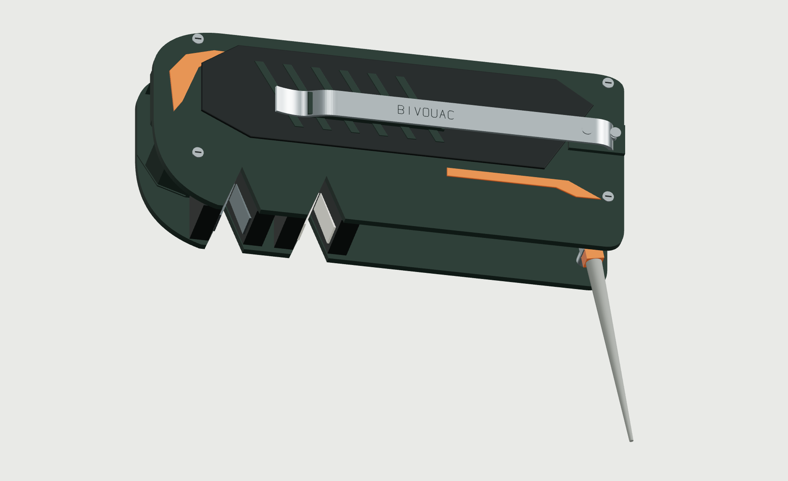

BIVOUAC
Une vidéo pour montrer toutes les fonctions
8 clips · environ 1 min 20 au total
Lame, loquet, fourchette, allume-feu, étui, deux V, tige conique et clips de poche.
Chaque clip se génère séparément. Les prompts sont prêts; les vidéos restent à générer dans ton compte Flow.Comment faire simplement
- Dans Flow, choisis Omni Flash 1.2 · Vidéo · Références / Ingrédients · 10 secondes · 16:9.
- Ouvre le plan 01 ci-dessous, enregistre ses images et importe-les dans Flow. Appuie sur Copier le prompt, puis colle-le dans Flow.
- Une fois le premier clip réussi, réutilise-le comme référence pour garder le même homme et le même atelier dans les plans suivants. Ajoute les images du produit indiquées pour chaque plan.
- Génère les plans suivants séparément, puis assemble les huit clips dans l’ordre, dans ton outil de montage. Ne colle pas les huit prompts dans une seule génération.
Les petits gestes prennent du temps : cette durée permet de voir les pièces sans tout faire défiler trop vite. On garde des sons de manipulation discrets et aucun dialogue.
Ouvrir Google Flow01 · Ouvrir la lame et montrer son profil10 secondes

02 · Montrer le loquet et refermer la lame10 secondes
03 · Sortir et ranger la fourchette indépendante10 secondes
04 · Retirer l’allume-feu et montrer le grattage10 secondes


05 · Ranger le couteau dans l’étui et le retirer10 secondes

06 · Montrer les deux aiguiseurs en V10 secondes

07 · Déplier la tige conique et montrer le crochet10 secondes
Ajoute ces images comme références dans Flow :
Enregistrer : Étui et aiguiseurs Enregistrer : Lame ouverte
Enregistrer : Lame ouverte


Enregistrer : Tige conique déployéeEnregistrer : Lame ouverte